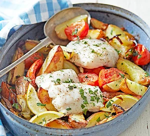

Greek-Style-Roast-Fish

Description
Experiance the heavenly flavours of gree style roast fish. A dish that transport you
to the sun-kissed shores of the mediterranean.The tender flesh infused with the essence of lemon
,oregano and garlic.
Ingredients
- 5 small potatoes (about 400g), scrubbed and cut into wedges
- 1 onion, halved and sliced
- 2 garlic cloves, roughly chopped
- ½ tsp dried oregano or 1/2 tbsp chopped fresh oregano
- 2 tbsp olive oil
- ½ lemon, cut into wedges
- 2 large tomatoes, cut into wedges
- 2 fresh skinless pollock fillets (about 200g)
- small handful parsley, roughly chopped
Process :
- Heat oven to 200C/180C fan/gas 6. Tip the potatoes, onion, garlic, oregano and olive oil into a roasting tin, season, then mix together with your hands to coat everything in the oil. Roast for 15 mins, turn everything over and bake for 15 mins more.
- Add the lemon and tomatoes, and roast for 10 mins, then top with the fish fillets and cook for 10 mins more. Serve with parsley scattered over.